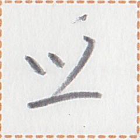

← Previous
Index
Next →
English:
There is dew on the leaves.
Chinese:
叶子上有露水。
Chinese (pinyin):
Yèzi shàng yǒu lùshui.
Pekzep (latin transcription): nua2 det aim2 ie kot hop1.
Pekzep (hanzi transcription):
水種在於草手。
Pekzep (linzklā):

Analysis:
nua2 det
水種
noun
dew
aim2 {ie N}
在 {於N}
{
N}
verb
to be {at a place}
ie
於
coverb
(indirect object of a verb)
kot hop1
草手
noun
leaf, leaves